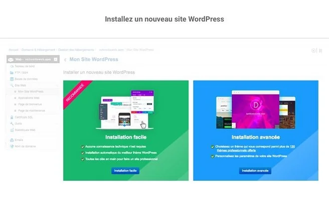

Comment créer un site WordPress et l’héberger ?
Comment créer un site WordPress de a à Z, qui s'adapte à tous les supports
?
ma pédagogie ce tiens en trois lettres ce sont les 3 "C" cliqué, copié,
collé, si vous êtes
capable de
cliqué, coplié et collé, alors vous êtes capable de réaliser un site
word Press.
Vous allez créer votre site web avec WordPress, le CMS le plus utilisé au monde.
Je couverai quasiment toutes les étapes. Depuis l’enregistrement du nom de domaine, le choix
d’un
hébergeur web jusqu’à l’installation et la configuration du site WordPress.
ÉTAPE 1 : Choisir le bon CMS / plateforme
Si vous souhaitez rapidement créer un site Web convivial et compatible avec les
smartphones,
vous devez choisir une plate-forme (également appelée système de gestion
de contenu)
adéquate.
Qu’est-ce qu’un « Système de Gestion de Contenu » ?
Eh bien, en 2020, lorsque j’ai commencé le développement web, la plupart des sites que je créais ont été construits en code HTML, CSS et même avec Javascripts. Cela m’a pris beaucoup de temps à les apprendre et ils étaient difficiles à maîtriser.
La plupart des gens pensent encore que l’idée de construire un site à partir de zéro est assez ardue. En fait, ils ignorent exactement par où commencer. Vous avez sûrement vous-même cru que créer un site web est difficile ou requiert beaucoup de compétences de codage et de conception.
Bonne nouvelle! Ce n’est plus le cas de nos jours. Présentement, les systèmes de gestion de contenu (Content Management Systems, CMS) comme WordPress ont rendu la création d’un site web accessible à tous.
Autrement dit, un CMS (ou plate-forme de création de site Web) est une plate-forme conviviale qui sert à créer des sites Web et gérer votre propre contenu en ligne, au lieu d’utiliser un tas de code HTML. Pourquoi je recommande d’utiliser WordPress pour créer votre site web ? WordPress est l’une des plateformes de blogs et de publications de contenu les plus populaires. Avec plus de 76.5 millions de sites web à travers le monde, WordPress est de loin le plus utilisé. Non seulement WordPress offre une gestion libre de contenu et des Modèles élégants, il vous permet aussi de télécharger le logiciel à partir du site officiel WordPress.org et de l’utiliser gratuitement pour concevoir votre site en quelques minutes.
WordPress vs HTML & CSS : Partir de zéro pour apprendre le HTML seul,
sans parler de
CSS et
PHP, peut prendre 6 mois ou plus. Avoir une
connaissance de base du HTML peut vous
aider à
avancer les choses plus
rapidement.
Cependant, si vous voulez créer un site Web dans un jour ou deux,
l’apprentissage du
HTML
n’est pas une option viable.
WordPress vs logiciels de construction de sites web : Les constructeurs de
sites Web
sont
chers et souvent très limités. Ils sont bons pour des sites d’une
seule page, pas
plus.
Shopify est un bon exemple de constructeur de site
en
ligne.
WordPress vs Joomla vs Drupal: Drupal est une plate-forme très puissante
qui est
populaire
auprès des développeurs web et des codeurs expérimentés,
mais elle s’accompagne d’une
courbe
d’apprentissage très raide qui en fait un
mauvais choix pour les débutants.
Joomla est similaire à WordPress et fonctionne très bien pour les boutiques
en ligne,
mais
vous aurez besoin d’au moins un peu de connaissance de
codage pour le faire
fonctionner
comme vous le souhaitez.
Si vous voulez plus de détails, vous pouvez consulter cette comparaison assez complète entre WordPress, Joomla et Drupal.
La différence entre WordPress.org et WordPress.com
La différence entre les deux services se résume à la
flexibilité et la personnalisation:
WordPress.org
permet beaucoup plus de liberté pour les blogs et
le téléchargement de contenu.
Même si WordPress.com est facile
à utiliser et héberge gratuitement votre blog, il
est plus
restrictif et est livré automatiquement avec un sous-domaine
WordPress.com (par exemple,
votreblog.wordpress.com).
WordPress.org , n’est pas uniquement un CMS, il
s’agit plutôt d’un logiciel que
vous
téléchargez et
installez sur votre disque dur, ou encore l’utiliser sur un autre
serveur sur le web. Il est
plus
avancé et offre plus d’options.
Un autre facteur à considérer est l’argent. Les deux services WordPress sont techniquement gratuits,
mais le logiciel téléchargé n’est utilisable que si vous payez pour un nom de domaine personnalisé
et un espace d’hébergement web.
Vous pouvez aussi consulter notre comparatif
complet entre wordpress.org et
wordpress.com.
Étape 2 : obtenez un nom de domaine et un hébergement web
Pour construire votre site WordPress (ou tout autre type de site), vous aurez
besoin de deux
choses:
1. Un nom de domaine (une adresse Web comme votresite.com)
2. hébergement web(un service qui connecte votre site à l’Internet)
La plate-forme WordPress elle-même est gratuite, mais un nom de domaine et
l’hébergement web
vous
coûtera de 5 à 15€ par mois . Cela coûte moins cher
qu’un café!.
Posséder votre propre nom de domaine est primordial si vous désirez s’afficher
comme un vrai
professionnel. Alors, utiliser un sous-domaine du genre
votresite.autredomaine.com ne peut que
nuire
à ton image de marque.
De plus, en ayant votre propre hébergement web, vous vous assurerez que votre site web se charge rapidement et ne restera pas en panne pendant des heures (ce qui est très important pour tous ceux qui visitent vos pages).
Comment obtenir un nom de domaine et un hébergement web ?
J’utilise principalement
www.infomaniak.comcomme hébergeur et bureau
d’enregistrement
de nom de domaine.
Fondé en 1994, Infomaniak est l’un des hébergeurs les plus populaires en Europe.
Il offre une
panoplie de produits destinés pour les particuliers et les entreprises.
Leurs prix
d’enregistrement
de noms de domaine sont beaucoup moins chers en
comparaison à plusieurs autres fournisseurs
d’hébergements de site WordPress.
L’achat d’un nom de domaine vient avec un ou plusieurs comptes de messagerie professionnelle, votrenom@votresite.com, qui est bien plus professionnel qu’une adresse générique Gmail ou Yahoo.
Rappel !
Les noms de domaine se terminent généralement par .com, .fr, .org,
.net, etc. Ces
dernières
années, de nouvelles extensions ont vu le
jour comme .agency et .pizza.
Mon meilleur conseil ? Évitez les extensions bizarres et optez
pour .com, .net ou
.org.
Consulter notre guide sur comment acheter un nom de domaine.
Allez sur infomaniak
En cliquant sur ce lien, vous allez directement sur la page de création de votre site avec WordPress.
Étape 3 : Configurez et personnalisez votre site web
Il est maintenant temps de mettre votre site Web en ligne. La première chose à
faire est
d’installer WordPress sur votre domaine.
Installation de WordPress
Il existe deux manières possibles d’installer WordPress, une BEAUCOUP
plus
facile que l’autre.
1. Utilisez une installation en 1 clic
Presque tous les hébergeurs fiables et bien établis ont intégré la fonction
d’installation en
1 clic. Cela vous permettra de commencer la construction de
votre site en un
rien
de temps.
Si vous vous êtes abonné chez Infomaniak ou chez n’importe quel autre
hébergeur WordPress similaire,
vous devriez trouver votre « installation en 1 clic
» dans le panneau de configuration de votre
compte.
Voici les étapes à suivre (ces étapes devraient être similaires / identiques chez
tous les fournisseurs d’hébergement Web):
1. Connectez-vous à votre compte d’hébergement.
2. Allez sur votre panneau de contrôle.
3. Recherchez l’icône “WordPress” ou “Site Web”.
4. Choisissez le domaine dans lequel vous souhaitez installer votre site Web.
5.0Cliquez sur le bouton “Installer maintenant” et vous aurez accès à votre nouveau
site WordPress.
